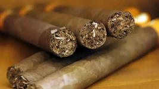

烟草：在吞云吐雾中收获健康？
香烟处方，奶油烟，烟雾灌肠疗法
- “越来越多的医生选择抽骆驼牌香烟！”“20679位医生说好运牌香烟刺激性低！”“吸一根清新的香烟，给喉咙放个假！”这些说吸烟有益健康的激情宣传，在20世纪中期之前，能在美国各地杂志上的彩色插页广告中看到。1955年，超过50%的美国成年男性吸烟，吃惊吗？医生自己也非常喜欢吸烟，大约就在当时，30%的美国医生声称自己每天至少吸一包烟。如今两代人的时间过去了，美国的吸烟人数达到了历史最低。在之前500年，人们深信这种高度成瘾的物品有助于健康，而在过去60年中这一认识发生了翻天覆地的变化。
- 过去几千年中，在美洲本土种植过60种烟草。15世纪，西班牙探险家来到美洲的时候，烟草已经在南美和北美被作为仪式辅助、消遣性药物以及医用草药被广泛使用。后来，探险家们不断地在新大陆发现烟草作为医药的广泛使用。在墨西哥，它被当作止泻剂、泻药以及镇静剂。烟草的叶子不仅可以晒干后用来抽食，也被当地人用来治疗伤口和烫伤，其叶子磨成粉末吞服之后，可以缓解喉部的黏液堆积。加利福尼亚的沙漠部落将烟草叶子碾碎，制作出一种药膏，用来治疗风湿病，以及湿疹一类的皮肤感染。抽食烟草叶子也可以治疗普通感冒。另外，当地人认为，将烟草与鼠尾草叶子混合疗效会更强。
- 在引领时尚潮流方面，16世纪的法国就如同21世纪的法国一样，鼻烟很快成为欧洲各国宫廷的必备之物。在16世纪晚期，你去参加贵族派对，很少有人不会给你一撮鼻烟的。而这种时尚的药物渐渐向其他社会阶层传播，进入大众的视野也不过是个时间问题。尼科特功成名就，获利颇丰。后来他退居乡野，继续为自己的另一个梦想奋斗：编辑一部法语词典。
- 耳道并不是身体唯一可以接受二手烟强力治疗的开口。你知道有句俗语叫blowing smoke up your ass（直译为：把烟吹进你的屁股，用来形容虚与委蛇、言不由衷的奉承）吗？好吧，你下次再见到高高在上的客户时可以感受一下这个来源于医学的俗语。实际上，把烟吹进某个人的屁股，是18世纪时实施的一种复苏方法。因为这种复苏法非常流行，烟草灌肠套装一度生产规模很大，普通家庭也可以非常方便地买到。诚然，准备一个急救医药箱总是最好的，但真不是说要在急救用品之外准备一套烟草灌肠套装。
- 1665年，伦敦暴发了一场瘟疫，学生们被告知在教室中抽烟是一种驱散疾病的方式。生活在瘟疫蔓延的伦敦，唯一的好处可能是学生们不需要逃学就能接受尼古丁的治疗。无独有偶，1882年博尔顿暴发天花，一所济贫院中的所有居住者都分到了烟草，他们以此来抵御病菌。烟草作为消毒剂的效力，是医生们偶然发现的。1889年，一个不知名的作者在《英国医学期刊》上发表文章，提到化合物吡啶存在于烟草的烟中，能够杀死病菌，而且，吸烟的人感染白喉和斑疹伤寒等传染病的概率更低。1913年，《柳叶刀》上的一篇文章称对烟草中的吡啶做了更多检验，再次证明，烟草的烟能够杀死引发霍乱的病毒。